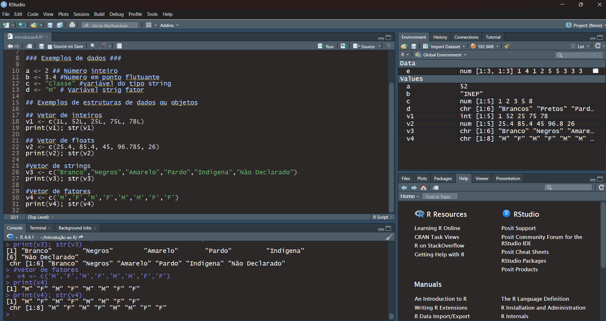
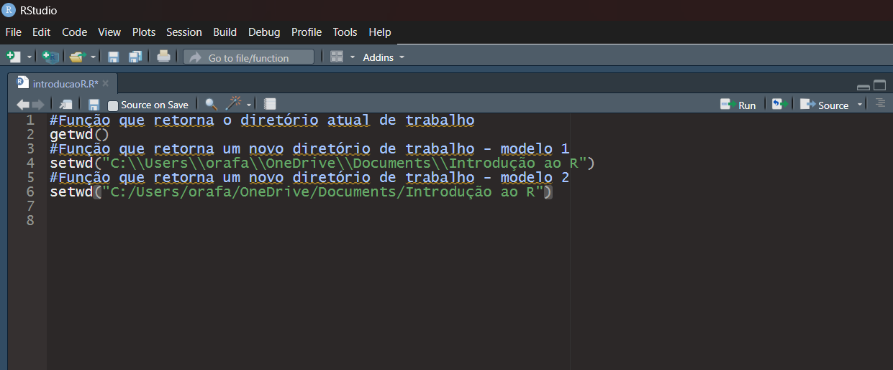

O R é uma linguagem de programação de alto nível, orientada a
objetos, voltada para a manipulação e análise de dados, além
da visualização gráfica. Seu ecossistema oferece tanto a
implementação de técnicas estatísticas próprias quanto o uso de
métodos já disponíveis em diversos pacotes desenvolvidos pela
comunidade
R Base
Sobre o R Base.
O R Base constitui o núcleo das funções da linguagem R, englobando
sua estrutura fundamental, os pacotes básicos e o registro de pacotes
adicionais desenvolvidos pela comunidade, sob a gestão do CRAN.
O Acesso do CRAN.
Editor de Script (canto superior esquerdo)
Onde o código em R é escrito e salvo em arquivos .R. Permite organizar,
comentar e executar trechos de código.
Console (canto inferior esquerdo)
Funciona como linha de comando do R. Mostra a saída dos comandos executados
e também aceita comandos digitados diretamente.
Environment / History (canto superior direito) com o seguintes campos:
Environment: Exibe as variáveis, data frames e outros objetos
atualmente carregados na sessão do R.
History: Registra todos os comandos digitados no console.
Environment: Exibe as variáveis, data frames e outros objetos
atualmente carregados na sessão do R.
Files: mostra os arquivos da pasta de trabalho.
Plots: exibe gráficos gerados pelos comandos de visualização.
Packages: gerencia pacotes instalados e carregados.
Help: ornece documentação e exemplos de funções/pacotes.
Viewer: exibe relatórios em HTML, dashboards e visualizações
interativas.
Tipos de dados em R
Tipo
Descrição
Propriedades
Exemplo
Texto
Caracteres alfanuméricos
Não permite operações matemáticas
"Computador"
Númerico
Numeros reais
Permite operações matemáticas
12.9, 10
Inteiro
Numeros inteiros
Permite operações matemáticas; sem decimais; Usar L
12L, 10L
Lógico
Valores Booleanos
Apenas TRUE FALSE
TRUE, FALSE
>
Tipos de variáveis em R - Exemplo prático
a <- 2L #Tipo Inteiro
b <- 3.14 #Tipo double ou numeric
c <- "Economia" # Tipo String
d <- "M" #tipo Fator
# Exemplo com vetor de inteiros
v1 <- c(10L,20L,30L,40L,50L,60L)
print(v1)
#Exemplo com um vetor de floats
v2 <- c(5.45, 3.14, 2.71, 10.13)
print(v2)
#Exemplo com vetor de Strings
v3 <- c("Branco","Preto","Pardo","Amarelo","Indígena","Não Declarado")
print(v3)
#Exemplo com vetor de factor
v4 <- factor(c('M','M','F','M','F','F','F'))
print(v4)

Figura 3 – Tipos de Variáveis
Principais Objetos do R
Objeto
Descrição
Exemplo
Vetor
Sequência unidimensional de variáveis do mesmo tipo
Tabela com colunas de tipos de dados diferentes, ou uma coleção de vetores justapostos.
Na coluna as variáveis são do mesmo tipo, as linhas, também chamadas de observação,
podem ser de tipos diferentes.
data.frame(nome, idade)
Lista
Coleção heterogênea de objetos. Uma linha de um dataframe é um exemplo de lista.
list(nome = "Ana", idade = 25, notas = c(8,9,10))
Fator
Variável categórica (qualitativa)
factor(c("M","F","F"))
Pontos Importantes
Gerenciamento de diretório de trabalho no ambiente R é feito com as seguintes
funções:
getwd(): Retorna o diretório de trabalho atual do R.
setwd(): Define um novo diretório de trabalho no R.
#função getwd() - retorna o atual diretório de trabalho
getwd()
#função setwd() - Modifica o diretório de trabalho - Forma 1
setwd("C:\\Users\\orafa\\OneDrive\\Documents\\dados impopulares\\novo_site\\introducao-ao-r.github.io\\introducao_ao_r")
#função setwd() - Modifica o diretório de trabalho - Forma 2
setwd("C:/Users/orafa/OneDrive/Documents/dados impopulares/novo_site/introducao-ao-r.github.io/introducao_ao_r")

Figura 4 – Modificação do diretório de trabalho